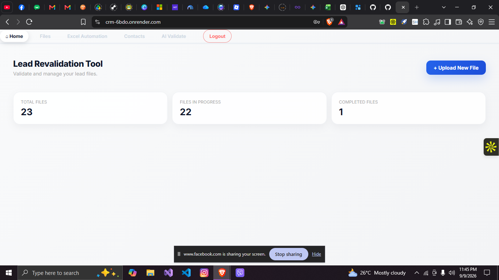
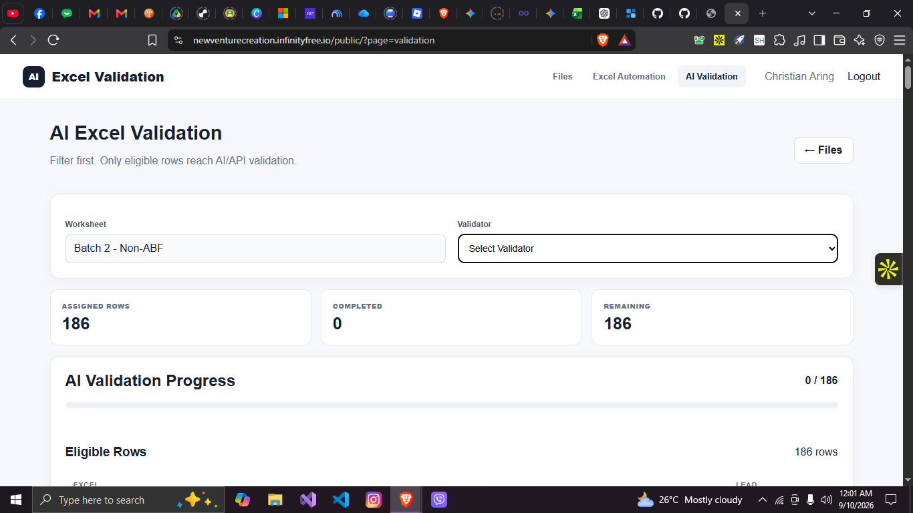
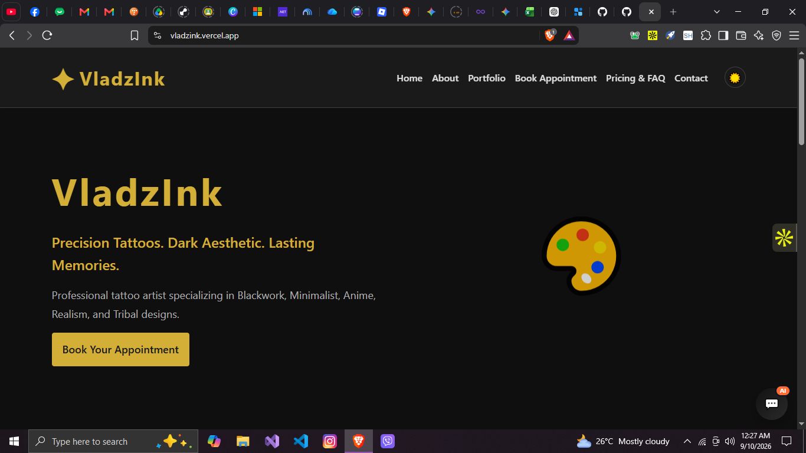

Bachelor of Science in
Information Technology
PHINMA Saint Jude College, Manila
Bringing analytical thinking, creative problem solving, and a people-first mindset to every opportunity.
I’m Christian B. Aring, a goal-oriented learner with a passion for solving problems and making a positive contribution.
I’m seeking an opportunity to apply my communication, analytical, and creative problem-solving skills in a dynamic organization.
I bring a focus on time management, empathy, team leadership, and project coordination, with experience in social media strategy and a commitment to lifelong learning.
PHINMA Saint Jude College, Manila
Senior High School
Secondary education
Primary education
System Integration and Architecture — Final Presentation
Computer Programming 2 (JAVA) · Participant
PHINMA – St. Jude College, Manila
Student-Led Conference · Participant
PHINMA – St. Jude College, Manila
Switches, Routers, Firewalls, and Wi-Fi Standards Explained
Online webinar · Participant
B2 level · Certificate ID QC29pa
Organizing priorities and making time count.
Applying analytical and creative thinking.
Helping a team move toward a shared goal.
Listening, understanding, and communicating clearly.
Experience in planning a social media approach.
Keeping tasks, people, and priorities connected.

A lead management workspace for organizing files, tracking validation, and processing Excel workbooks.
Upload and manage lead files in one workspace.
Track validation progress and preview changes.
Filter lead rankings and download processed Excel files.

An Excel workspace for cleaning, filtering, and AI validation with row-level progress tracking.
Keep uploaded workbooks and validation statuses organized.
Clean, enrich, and filter workbooks through the automation workspace.
Review eligible rows and monitor AI validation progress.

A tattoo studio website with a dark aesthetic, artist introduction, and an appointment booking page.
Present the studio and tattoo styles.
Read about the studio’s story and approach.
Explore the appointment form and contact page.
A responsive portfolio bringing my education, skills, and achievements together in one place.
Start with the people, the purpose, and what needs to work better.
Give every element a purpose and make the next step easy to understand.
Try the idea, pay attention to the details, and improve it along the way.
Have we worked together? I’d love to hear about your experience.
A thoughtful note about the collaboration, the process, or the result helps me keep improving.
Write here, then send through Gmail20 Yakal St, Palanas A, Brgy. Vasra,
Quezon City, Philippines, 1128